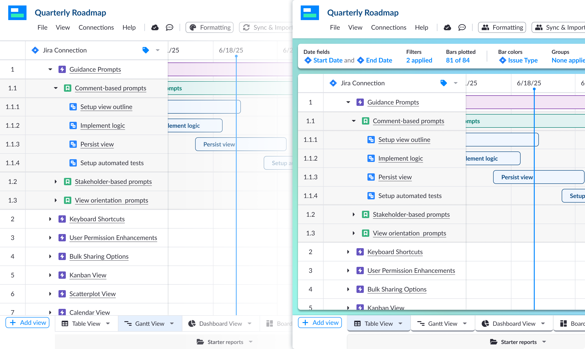
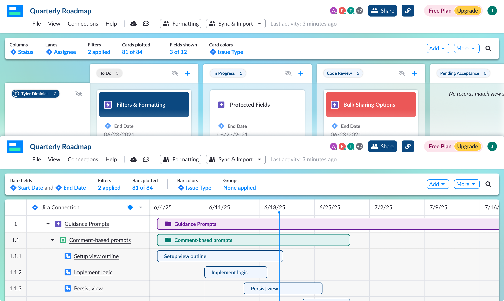
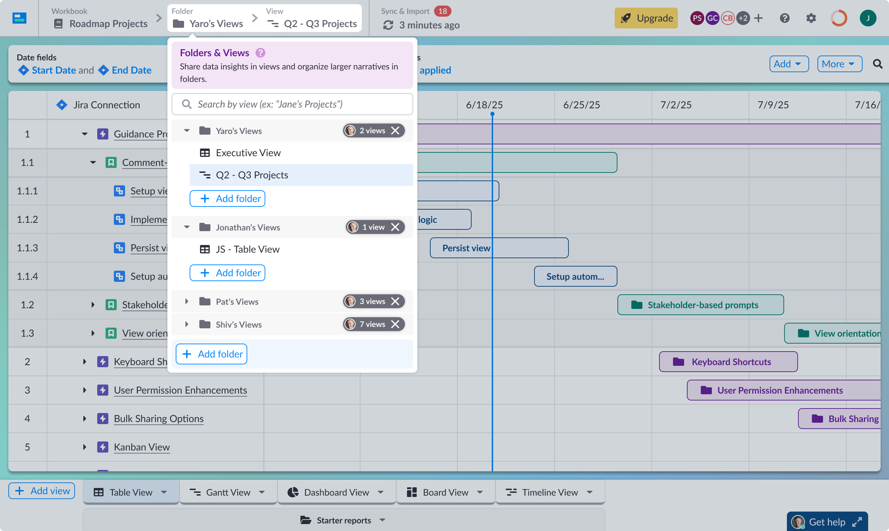

Head of Product Design · Visor / Rocketvisor · 2021–2025
Role
Head of Product Design (Lead → Principal → Head)
Outcome
4x increase in sign-up conversion and workspace invitations
Problem
Users struggled to understand what they were looking at, slowing onboarding and adoption
Approach
Introduced a persistent orientation layer that evolved into a core part of the product architecture
Overview
Visor is a project and roadmap management platform built around syncing with tools like Jira and Asana.
While working across views like Table, Gantt, Board, and Timeline, users would frequently lose track of what they were looking at. Filters, sorting, grouping, and field visibility changed between views, but nothing made that state clear.
This was not a feature request. It was a pattern I saw repeatedly in research.
I turned that pattern into an initiative that ultimately reshaped how the product was structured.
Problem
Users struggled because:
The result was slower onboarding, confusion, and delayed time to value.

Before and after — VOB makes view state immediately visible
Insight
Users did not understand the current state of the product. They could not answer a simple question: what am I looking at right now?
Approach
I introduced the View Orientation Bar, a persistent layer that made the current state of the product visible and actionable.
It started small, then expanded as its value became clear.
The first version showed:
A key early insight was that simple summaries like "3 filters applied" were more effective than exposing raw configuration controls.

View Orientation Bar across Board and Gantt — configuration state always visible
As the pattern proved useful, it became a control surface:
The orientation bar evolved into a core navigation system:
What started as a status bar became a structural layer in the product.

Views and Folders panel — all views across collaborators, accessible from the bar
Before
After
Final Product
The View Orientation Bar adapted to each view type while maintaining a consistent interaction pattern.
This balance kept the experience consistent while respecting the needs of each view.
System Work
Alongside this work, I built and scaled the Visor design system from near-zero using atomic design principles.
The system supported both Visor and later MCP Manager, allowing the team to move quickly without rebuilding foundations.
Evolution Beyond Visor
A breadcrumb navigation concept explored during this project did not ship in Visor but later became a core pattern in MCP Manager.
This reflects how the work extended beyond a single feature and influenced multiple products.
Outcome
Beyond metrics, the project changed how the team approached product design.
What started as a small, self-initiated fix became: